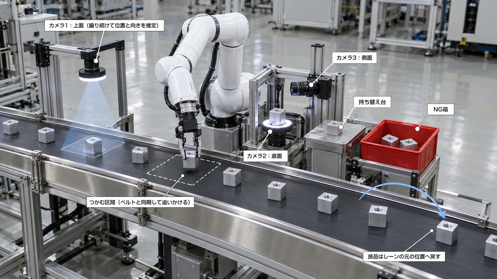
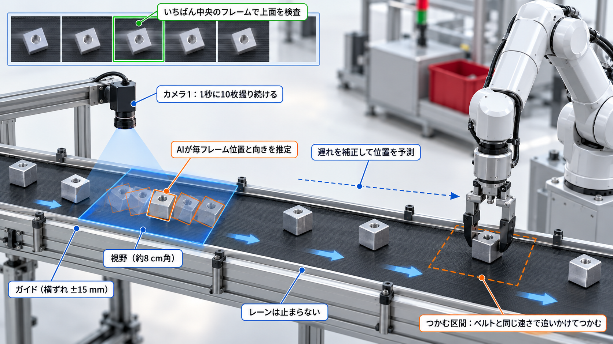
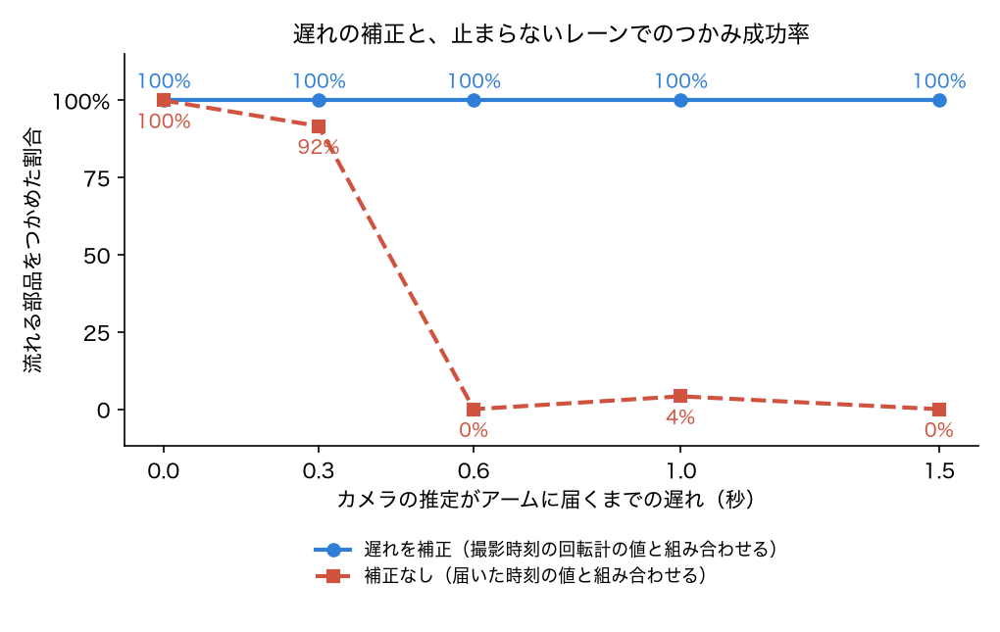
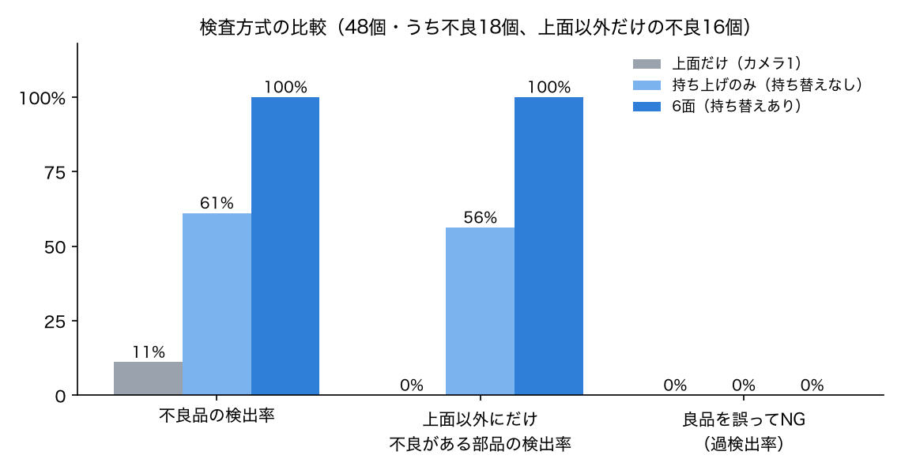

| 想定する現場 | 精密切削工場の出荷前工程。切削・洗浄を終えた部品を、梱包前に全数検査する（本課題で設定した想定）。 |
|---|---|
| 対象部品 | アルミ（A6061）削り出しのセンサーハウジング。40 mm 角、上面に取付ねじ穴 1 か所。 |
| 見つけたい不良 | 打痕・傷（搬送や治具との接触）、油ジミ（洗浄残り）、角欠け。6面のどこにでも出る。 |
| 流れ方 | 前工程から、コンベアで1個ずつ流れてくる。間隔はばらばらで、ガイドの範囲（±15 mm）で横にずれ、向きもそろっていない。 |
| ねらい | レーンを止めずに、全6面を毎回同じ条件で撮って判定する。良品は元の並び順のまま次工程へ流す。 |
このタスクには、ロボットの動きの面で難しい点が3つあります。

カメラは上面・底面・側面の3台だけです。側面4面は、手首の回転と持ち替えで1台のカメラに向けます。指で隠れた面はカメラを増やしても撮れないため、持ち替えは必ず必要になります。 公開されている多面検査の製品にも、ロボットで向きを変えて少数のカメラで撮る方式があります（スカイロジック「検査員ロボット」、ヒューブレイン「多面外観検査装置」など）。

最初はカメラの映像からベルトの速さも推定していましたが、約5%の誤差が、つかむまでの十数秒で1〜2 cm のずれに積み上がり、つかみ損ねが多発しました。回転計と組み合わせる方式に変えて解決しました。
| AI | 入力 → 出力 | 学習データと精度 |
|---|---|---|
| ① 位置・向きの推定 （動きを決める） | カメラ1の画像 → 部品の横・前後の位置、向き。アームの目標位置とつかむ向きになる。 | 位置・向き・照明・ベルトの縞の位置をばらつかせた合成画像 8,000 枚。誤差は横 {{pose_x}} mm、前後 {{pose_y}} mm、向き {{pose_yaw}}°。1枚あたり約 {{infer_ms}} ms（CPU）。 |
| ② 面ごとの良否判定 （行き先を決める） | 各カメラの面画像 → 良・打痕傷・油ジミ・角欠け。1面でも不良確率が0.5を超えたら NG。 | ラインと同じカメラ・姿勢で、照明・色味・位置・向きをばらつかせた合成画像 16,000 枚。テスト {{cl_n}} 枚で正解率 {{cl_acc}}。 |
合成画像の不良ははっきり写るため、判定の精度は高く出ます。実際の金属の反射や限度ぎりぎりの小さな傷は、8章の限界に記載しました。
推定がアームに届くまでの遅れを 0〜{{lat_max}} 秒で変え、補正あり・なしで、流れる部品をつかめた割合を比べました（各条件 {{lat_parts}} 個）。

| 遅れ（秒） | {{lat_head}}
|---|
| 補正あり | {{lat_on}}
| 補正なし | {{lat_off}}
補正なしでは、遅れの間に進んだ分（ベルト速度 3 cm/秒 × 遅れ）だけ後ろを狙うため、遅れが大きいほどつかみ損ねが増えます。撮影時刻で補正すると、遅れが大きくても成功率を保てました。
同じ止まらないレーン・同じ部品で、検査方式だけを変えて流しました（{{a_lots}} ロット、計 {{six_parts}} 個、うち不良 {{six_ng}} 個）。

| 方式 | 不良品の検出率 | 上面以外にだけ不良がある部品 | 良品の誤NG | つかみ成功率 | つかんだ1個あたりのアーム作業（不良品を含む平均） |
|---|---|---|---|---|---|
| 上面だけ（カメラ1） | {{top_recall}} | {{top_hidden}} | {{top_frr}} | {{top_grip}} | ― |
| 持ち上げのみ（持ち替えなし） | {{nr_recall}} | {{nr_hidden}} | {{nr_frr}} | {{nr_grip}} | {{nr_cyc}} 秒 |
| 6面（持ち替えあり） | {{six_recall}} | {{six_hidden}} | {{six_frr}} | {{six_grip}} | {{six_cyc}} 秒 |
上面だけでは、上面以外の不良はすべて見逃します。持ち上げるだけでは、指で隠れた2面の不良を見逃します。持ち替えまで行うと、6面すべてを確認できます。
つかみ成功率のかっこ内は「つかめた回数／つかもうとした回数」です。上面だけの方式は、上面で不良が見つかった部品だけをつかんで NG 箱へ運ぶため、回数が少なくなります。
第3回の演習にならい、AI の処理が1フレームの時間に収まるかを測りました。1ロットで実際に使った画像（カメラ1 {{tm_frames}} 枚、面画像 {{tm_faces}} 枚）を、ウォームアップの後に{{tm_rep}}回ずつ順番を混ぜて推論し、中央値と p95 を求めました。描画と結果の照合は計測から外しています。
| AI | 中央値 | p95 | 予算 |
|---|---|---|---|
| ① 位置・向きの推定（カメラ1の毎フレーム） | {{pose_med}} ms | {{pose_p95}} ms | {{tm_budget}} ms（カメラ1の撮影間隔、10 Hz） |
| ② 面ごとの良否判定（検査の1枚ごと） | {{face_med}} ms | {{face_p95}} ms | ― |
撮影時刻の間隔はすべて {{tm_dt}} ms で、抜けたフレームは {{tm_drop}} 枚でした。各フレームの回転計の進みはベルト速度×間隔と一致し、保存した画像は描画結果のコピーで、同じメモリを共有していないことも確かめました。 数値はこのPCのCPUでの値です。5.2 の評価（7プロセスを並列・各1スレッド）では、位置推定は平均 {{infer_ms}} ms でした。どちらも撮影間隔に収まり、遅れの実験で与えた 0.3 秒は、これに通信の時間を見込んだ値です。
学習に使っていない {{ho_eps}} 回の引き継ぎ（上空でずらした状態から方策に任せる）で、つかみ成功率は {{ho_succ}} でした。そのうち後ろへ 3 cm 以上ずれていた場合は {{ho_far}} です。
ライン全体でも、カメラ1の推定の遅れを補正せずに流し、つかむ動作だけを方策に任せました（各条件 {{pol_parts}} 個）。
| 遅れ（秒） | {{lat_head}}
|---|
| プログラム（補正なし） | {{lat_off}}
| 模倣学習した方策（補正なし） | {{pol_off}}
プログラムは、遅れの分だけ後ろを狙ってつかみ損ねます。方策は手先カメラで部品を見ながら位置を直すため、遅れの影響を受けにくくなります。5.1・5.2 の数字は、つかむ動作をプログラムで行ったときの評価です。
撮影するライン側と判定AIを、ROS 2 の2つのノードに分けて動かせるようにしました。判定AIを GPU のある別のPCに置くなどの構成変更に対応できます。
| ノード | やり取り |
|---|---|
| conveyor_line（MuJoCo＋ロボット） | 面画像を /inspection/image へ送り、/inspection/verdict の判定を待つ。関節の状態 /joint_states、作業の状態 /line/status、部品ごとの結果 /line/result を配信する。 |
| inspector（判定AI） | /inspection/image を受けて判定し、/inspection/verdict に返す。 |
課題資料のサンプル「Pick and Place Task（UR3＋2指グリッパ、ROS 2＋Gazebo）」を出発点にしました。
| サンプル | 本課題 |
|---|---|
| 止まっている物を、決まった場所でつかむ | 止まらないレーンを流れる、位置も向きもばらばらな部品を、カメラと同期して追いかけてつかむ |
| カメラとアームの遅れは扱わない | 推論と通信の遅れを撮影時刻と回転計で補正し、効果を成功率で示す |
| つかんで運ぶことが目的 | つかむと隠れる面を、持ち替えと手首の回転で見せる。関節の限界を見てつかむ向きを選ぶ |
| 置き場所は固定 | 動いているレーンの元の位置へ追いかけて戻す |
| AI なし | AI が位置と向きを推定して動きを決め、面ごとに良否を判定する |
| 項目 | 内容 |
|---|---|
| 主なソフトウェア | MuJoCo、ROS 2 Humble（RoboStack）、PyTorch / torchvision（ResNet-18）、NumPy、imageio、Pillow、matplotlib |
| ロボットモデル | MuJoCo Menagerie の Franka Emika Panda（Apache-2.0）。リポジトリには含めず、スクリプトで取得。 |
| コード | MIT License。再現手順はリポジトリの README に記載。 |
| 生成AIの利用 | 構想図（図1・図2）の作成と先行事例の調査に生成AIを使用した。コードの作成・デバッグにもAIアシスタントを使った。 |
| 動画 | デモ部分は2倍速（動画内に表示）。 |